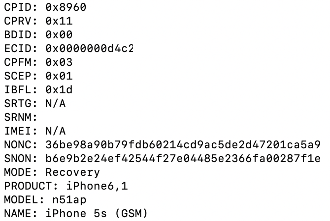

First Steps
Most tools are designed to be used on macOS, however if compiled from source they may be able to run on other operating systems.
Download and compile:
img4lib (img4) by @xerub
dmgtool from xpwn by @planetbeing
img4tool by @Tihmstar
iPatcher by @exploit3dguy
tsschecker by @Tihmstar
seprmvr64lite by @mineekdev
irecovery from Libimobiledevice
usbmuxd from Libimobiledevice
kerneldiff by @dedbeddedbed
Download (precompiled):
iPwnder32 by @dora2ios
gnu-tar from homebrew
NOTE: iPwnder32 does not work on Apple Silicon on macOS 11.3 or higher. I have yet to find a pwndfu tool that will work on these macOS versions.
You may also want an SFTP client. I recommend Cyberduck
Other:
Jailbroken A7 device on latest iOS with openssh installed (any compatible jailbreak should work)
The target firmware (iOS 7.x) which can be found here
You will also need to download an iOS 8.0 IPSW to make an SSH ramdisk
NOTE: Due to Apple messing up their servers, you may need to download the IPSW using http. To do this, remove "secure" from the URL and replace "https" with "http"
SHSH(2) (apticket) files:
SHSH signatures are required in order to properly build img4 files that the BootROM will accept from pwned DFU mode. Unless you have them already, you can save them with tsschecker (or other public tools.)
NOTE: SHSH version does not have to match target iOS version.
tsschecker -d iPhoneX,X -l -e ECID -B boardconfig -l -s
If you do not know your ECID or boardconfig, connect the device in recovery mode and execute:
irecovery -q
which will give output similar to this:

Next, convert your saved shsh2 file for your device to raw IM4M with img4tool. This file will be critical for signing components later on:
img4tool -e -s *.shsh2 -m IM4M